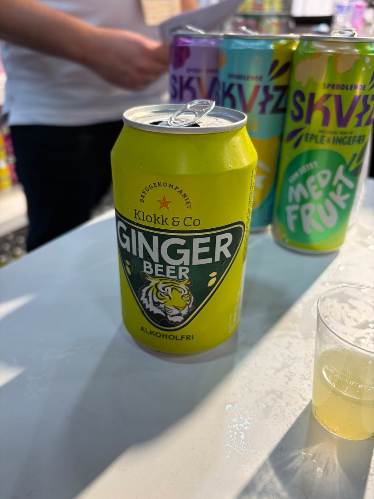
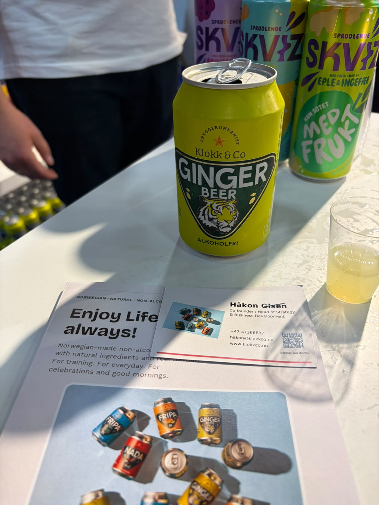
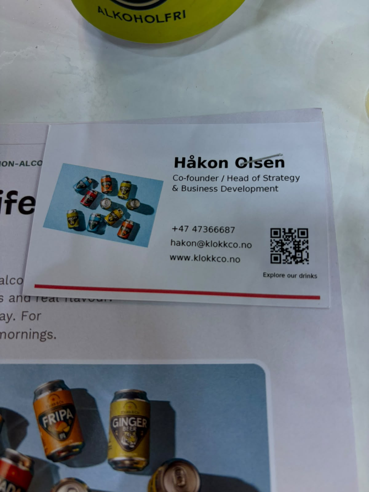
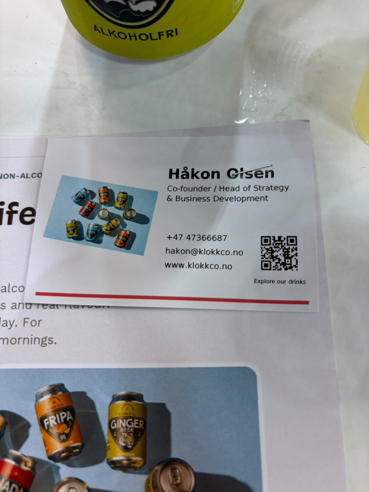
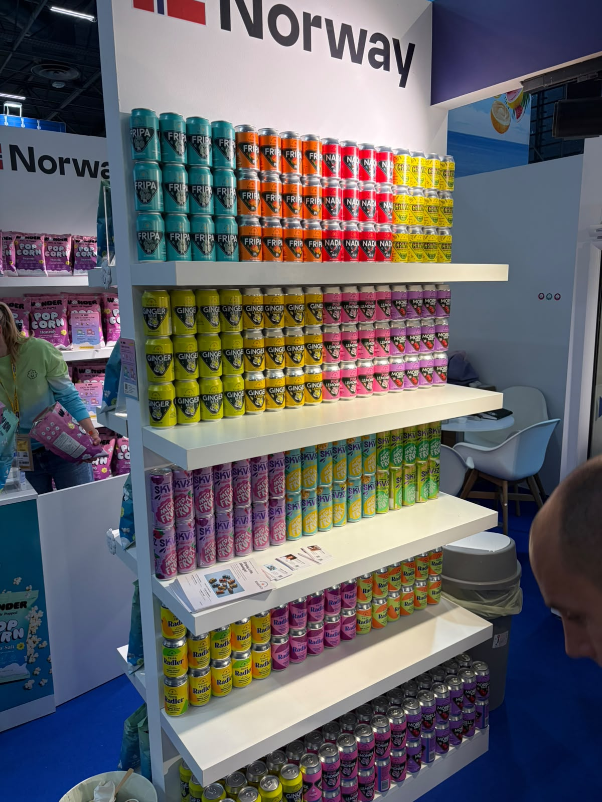
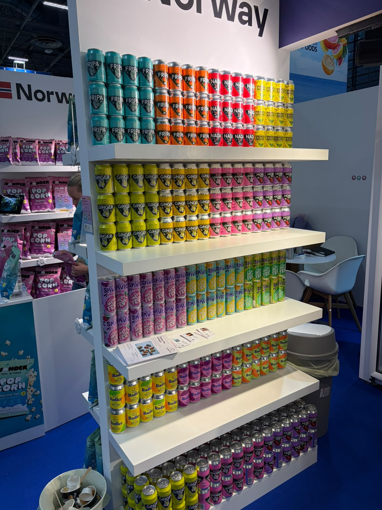
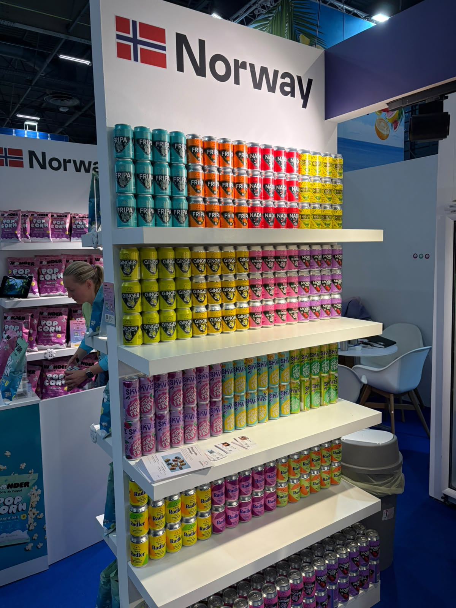

Klokk & Co
مشروبات زنجبيل وفواكه
الوكيل الحصري في السعودية
لم يُعثر في البحث العام على دليل موثوق يثبت وجود وكيل حصري لهذه الشركة في السعودية أو ينفيه. لا تُعدّ السوق متاحة حصريًا قبل رد الشركة.
- الجهة
- لم تُثبت جهة سعودية محددة
- نطاق الدليل
- Klokk & Co
- تاريخ البحث
- 21 أكتوبر 2026
الخطوة التالية: طلب تأكيد مكتوب باسم الوكيل، ونطاق السعودية، والعلامات والأصناف وقنوات البيع، وسريان الحصرية.
النتائج العامة محدودة، وتعذر استخراج محتوى كافٍ من الموقع المرجعي؛ النتيجة غير محسومة وتحتاج رد الشركة.
المصادر وطريقة التحقق
- الموقع المرجعي للشركة / صفحة التواصل
مرجع للاستفسار المباشر؛ ليس شهادة بعدم وجود وكيل.
بحث باسم الشركة والعلامات مع السعودية والتوزيع والوكالة، ومراجعة المصادر العامة المتاحة. لم يتم التواصل مع الشركة أو الاطلاع على عقد وكالة.
المنتجات والمجال
- Ginger Beer موصوف بأنه خالٍ من الكحول
- مشروبات SKVIZ وتشكيلة العلب الظاهرة بالكتيب
بطاقة الملف
الجناح
غير ظاهر في الصور
العنوان
النرويج
حالة المتابعة
بيانات المعرض محفوظة — لم يُعتمد توريد
وسائل التواصل
Håkon Olsen
Co-founder / Head of Strategy & Business Development
بطاقة مصورة ضمن دفعة المستخدم المستلمة في 21 أكتوبر 2026
الصور وبطاقات الأعمال
اضغط على الصورة لفتح الأصل بالحجم الكامل.













